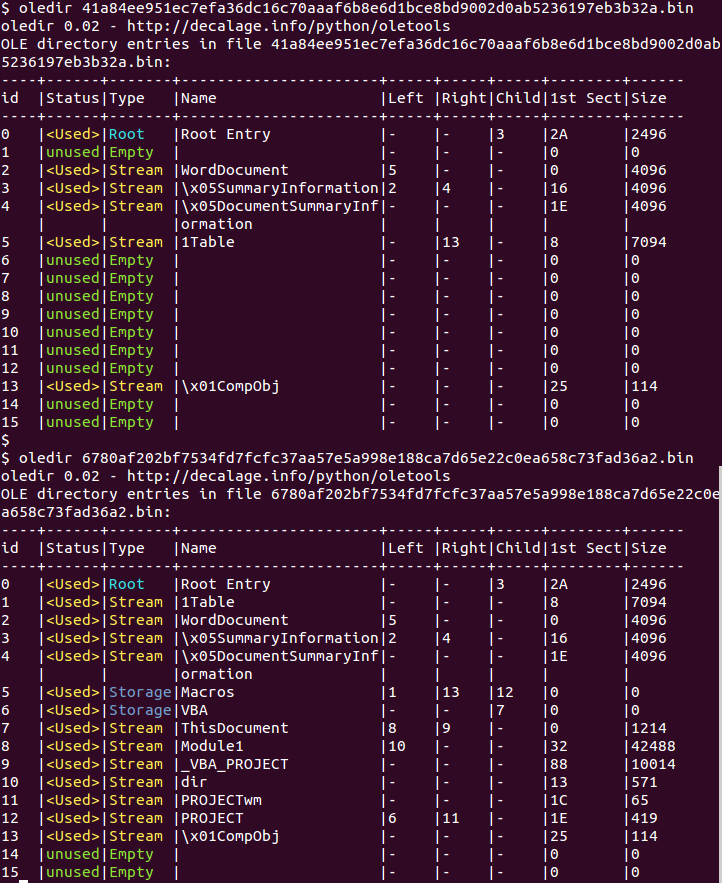

oledir is a script to display all the directory entries of an OLE file, including free and orphaned entries.
It can be used either as a command-line tool, or as a python module from your own applications.
It is part of the python-oletools package.
Usage: oledir [options] <filename> [filename2 ...]
Options:
-h, --help show this help message and exit
-r find files recursively in subdirectories.
-z ZIP_PASSWORD, --zip=ZIP_PASSWORD
if the file is a zip archive, open all files from it,
using the provided password (requires Python 2.6+)
-f ZIP_FNAME, --zipfname=ZIP_FNAME
if the file is a zip archive, file(s) to be opened
within the zip. Wildcards * and ? are supported.
(default:*)Scan a single file:
oledir file.doc
TODO